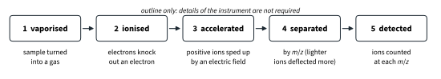
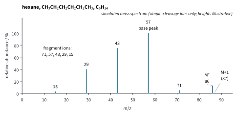
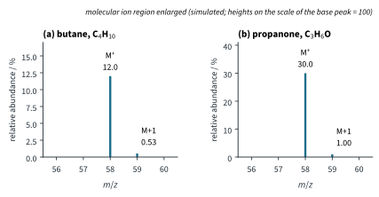
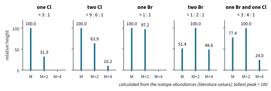
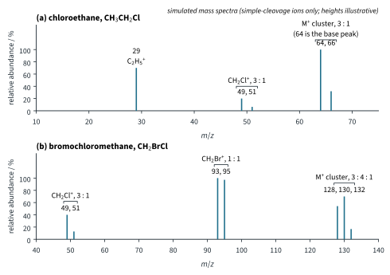
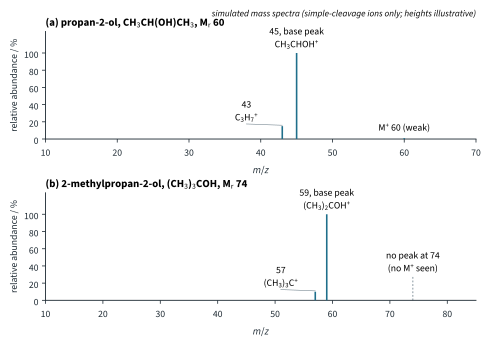
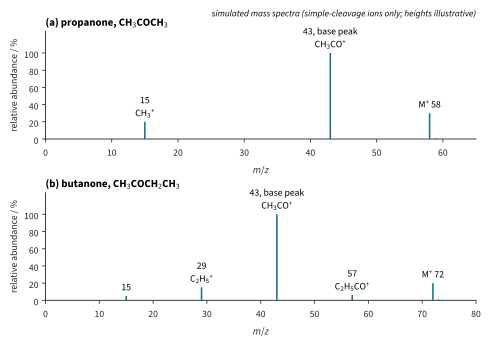
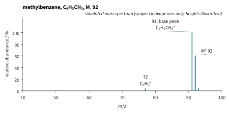

Mass Spectrometry and Structure Solving 1
Chapter H3.4 · Mass Spectrometry and Structure Solving Part 1
On this page
Introduction
H3.2 and H3.3 gave us two ways of looking inside a molecule: IR spectroscopy finds the functional groups, and 1H NMR spectroscopy tells us how the hydrogen atoms are arranged. Neither tells us directly how heavy the molecule is. That is the job of mass spectrometry. A mass spectrum gives
- the relative molecular mass, Mr, of the compound;
- clues to its formula: whether it contains chlorine or bromine, and roughly how many carbon atoms it has;
- the pieces the molecule breaks into, which show how its atoms are joined.
Mass spectrometry is the one technique in H3 that does not use light (H3.1 Part 2). You have met its ideas before: in Topic 1 Part 1 beams of charged particles were deflected between charged plates, by an amount that depends on charge/mass, and the In-industry box "Isotope patterns in LC-MS" showed the 3 : 1 and 1 : 1 pairs of chlorine and bromine compounds. Topic 6 Part 1 used the mass spectra of elements to find relative atomic masses. This Part does the same for molecules.
Key terms
You will use these terms throughout the chapter.
| Term | Meaning |
|---|---|
| Mass spectrometry (MS) | A technique that turns molecules into positive ions, separates the ions by their mass-to-charge ratio and records how many of each arrive at the detector. |
| Ionisation | Knocking an electron out of a gaseous molecule with a high-energy electron, to make a positive ion: M(g) + e− → M+(g) + 2e−. |
| Molecular ion, M+ | The ion formed from the whole molecule by the loss of one electron. Its m/z gives the Mr of the compound, as a whole number calculated with the lightest isotopes (35Cl, 79Br). |
| Fragmentation | The breaking of a molecular ion into a smaller positive ion and a neutral radical. |
| Fragment ion | A positive ion formed by fragmentation. Only positive ions are detected. |
| Radical | A species with an unpaired electron, shown with a dot, for example CH3• (11.1 Part 3). |
| Mass-to-charge ratio, m/z | The mass of an ion (relative to 12C = 12) divided by its charge (in units of the charge on the electron). Almost all ions in a spectrum have z = 1, so m/z is the relative mass of the ion. |
| Base peak | The tallest peak in a spectrum. Its height is set to 100 and every other peak is given as a percentage of it. |
| Relative abundance | The height of a peak as a percentage of the base peak (the y-axis of a mass spectrum). |
| Isotope peaks (M+1, M+2, M+4) | Peaks 1, 2 or 4 units above a peak, from ions containing a heavier isotope (13C, 37Cl, 81Br). |
| Simple cleavage | Fragmentation by the breaking of one bond, with no atoms moving from one place to another in the ion. |
How a mass spectrum is made
You need only an outline of the instrument. A mass spectrometer does five things to a sample (Fig 1):
- The sample is vaporised: the molecules must be in the gas phase.
- The molecules are ionised by a beam of high-energy electrons. An electron hitting a molecule knocks one of its electrons out, leaving a positive ion. For ethanol: CH3CH2OH(g) + e− → CH3CH2OH+(g) + 2e−.
- The positive ions are accelerated by an electric field, so that they move off as a beam.
- The ions are separated according to their mass-to-charge ratio, m/z, by a magnetic or an electric field. As in Topic 1 Part 1, lighter or more highly charged ions are deflected more.
- The ions reach a detector, which records how many ions arrive at each value of m/z.

The ion formed from the whole molecule is called the molecular ion, M+. It is the molecule with one electron missing.1 The ions that matter are the positive ones: only they are accelerated, separated and detected. Details of instruments are not required.
The mass-to-charge ratio and reading a spectrum
The separation step sorts ions by m/z: the mass of the ion (on the scale on which 12C = 12) divided by its charge. Nearly every ion made by electron impact has lost just one electron, so z = 1 and m/z is simply the relative mass of the ion.2 The mass of the lost electron is far too small to matter, so the m/z of the molecular ion gives the Mr of the molecule, as a whole number calculated with the lightest isotopes (35Cl, 79Br; see the chlorine and bromine section).
A mass spectrum is drawn as a set of vertical lines (Fig 2):
- the x-axis is m/z;
- the y-axis is the relative abundance of each ion, as a percentage of the tallest peak, the base peak, which is set to 100;
- the molecular ion peak is the peak at the highest m/z (apart from its small isotope peaks, later in this Part);
- every peak below it is a fragment ion: a piece of the molecular ion.

A note on the spectra in this chapter: they are simulated. Each one shows only the ions formed by simple cleavage (breaking one bond) and, for compounds without halogens, the small M+1 peak of the molecular ion. Real spectra have many more small peaks, including ions formed when atoms move about inside an ion (rearrangements), which are not in the 9813 syllabus. The m/z values are exact; the heights are illustrative, based on typical patterns.
Fragmentation
Electron impact leaves many molecular ions with extra energy, and some of them break apart before they reach the detector. In this chapter one bond breaks at a time. The two electrons of that bond are shared out so that one piece keeps the positive charge and the other carries the unpaired electron:
- a cation, which is detected;
- a neutral radical, which is not detected: it has no charge, so it is not accelerated or deflected and never reaches the detector.
For butane, losing a methyl radical:
CH3CH2CH2CH3+ → CH3CH2CH2+ + CH3•
m/z 58 → m/z 43 + (15, not detected)
When you write a fragmentation equation:
- put the + charge on the fragment that is detected (the one at the m/z in the spectrum);
- put the dot on the neutral radical;
- check that the masses add up: mass of the ion + mass of the radical = M (here 43 + 15 = 58).
The peak tells you the mass of the ion; the difference between M and the ion tells you the mass of the piece that was lost. Both are clues to the structure.
Worked example 1: the mass spectrum of hexane
Fig 2 is the simulated mass spectrum of hexane, CH3(CH2)4CH3. (a) Identify the molecular ion peak and the base peak. (b) Identify the ion at each of m/z 71, 57, 43, 29 and 15, and the radical lost to form it. (c) Write an equation for the formation of the ion at m/z 57. (d) Suggest why the peak at m/z 15 is so small.
(To answer part (a), you have to find the peak at the highest m/z and the tallest peak.) The molecular ion peak is at m/z 86: C6H14 has Mr = 6 × 12 + 14 × 1 = 86. The base peak is at m/z 57. (The tiny peak at 87 is the M+1 peak; see later in this Part.)
(To answer part (b), you have to find which alkyl ions have these masses, then subtract each from 86.) Breaking one C–C bond of the chain gives an alkyl cation and an alkyl radical:
| m/z | Ion | Radical lost | Check: ion + radical |
|---|---|---|---|
| 71 | C5H11+ | CH3• (15) | 71 + 15 = 86 |
| 57 | C4H9+ | C2H5• (29) | 57 + 29 = 86 |
| 43 | C3H7+ | C3H7• (43) | 43 + 43 = 86 |
| 29 | C2H5+ | C4H9• (57) | 29 + 57 = 86 |
| 15 | CH3+ | C5H11• (71) | 15 + 71 = 86 |
Notice the regular steps of 14 (one CH2) between 71, 57, 43, 29 and 15: a typical pattern for a straight chain.
(To answer part (c), you have to put the charge on the C4 piece and the dot on the C2 piece.)
CH3CH2CH2CH2CH2CH3+ → CH3CH2CH2CH2+ + CH3CH2•
or C6H14+ → C4H9+ + C2H5• (57 + 29 = 86)
(To answer part (d), you have to think about cation stability, 11.1 Part 3.) Of all carbocations, the methyl cation, CH3+, is the least stable: it has no alkyl groups to push electron density towards the positive carbon. So very few molecular ions break to give CH3+, and its peak is tiny.
The molecular ion peak
The molecular ion peak is the peak at the highest m/z, apart from the small isotope peaks just above it (M+1, M+2, M+4, coming next). Because z = 1, its m/z is the Mr of the compound: the mass spectrum weighs the molecule. This is usually the first thing to read from a spectrum.
Two warnings:
- The molecular ion peak is not always the base peak. In hexane (Fig 2) it is only 12 % of the base peak.
- It can be weak or missing. If the molecular ion breaks up very easily, few or none survive long enough to reach the detector. Alcohols and highly branched alkanes are the usual culprits (worked example 4, later in this Part). A spectrum whose highest peak is at, say, 59 does not prove that Mr = 59; other data, such as the formula from composition by mass (Part 2), must agree.
Carbon-13 and the number of carbon atoms
Look again at Fig 2: there is a tiny peak at m/z 87, one unit above the molecular ion. It is the M+1 peak. It comes from molecular ions that contain one atom of carbon-13 in place of a carbon-12.
About 1.1 % of carbon atoms are 13C (literature value; Topic 1 gives 12C 98.9 %, 13C 1.1 %). Each carbon atom in a molecule has about a 1.1 % chance of being 13C, so the more carbon atoms a molecule has, the more likely it is to contain one 13C atom. The M+1 peak is therefore about 1.1 % of the M peak for every carbon atom.3 Turn this round and you can count the carbon atoms:
Worked example 2: two compounds with Mr 58
Two compounds, A and B, both give a molecular ion peak at m/z 58. Their M and M+1 peaks are (Fig 3): A, m/z 58 height 12.0 and m/z 59 height 0.53; B, m/z 58 height 30.0 and m/z 59 height 1.00. One is a hydrocarbon and one contains a C=O group. Find the number of carbon atoms in each, and suggest a molecular formula for each.

(To answer this, you have to use the ratio of the two heights, not either height alone, then find a formula with that many carbon atoms and a mass of 58.)
A: n = (0.53 / 12.0) × 100 / 1.1 = 4.42 / 1.1 = 4.0, so 4 carbon atoms
B: n = (1.00 / 30.0) × 100 / 1.1 = 3.33 / 1.1 = 3.0, so 3 carbon atoms
A has four carbon atoms (4 × 12 = 48); the other 58 − 48 = 10 must be hydrogen: C4H10, butane. B has three carbon atoms (36); 58 − 36 = 22 is too much for hydrogen alone on three carbons (at most 8), but one oxygen (16) and six hydrogen atoms fit: C3H6O, for example propanone. So A is the hydrocarbon and B is the carbonyl compound.
The rule works best for small molecules with tall, accurately measured M peaks. It ignores the other heavy isotopes (2H, 17O, 15N), which add a little to the M+1 peak. For large molecules the M+1 peak becomes as tall as the M peak, and counting carbon atoms this way is a Further example, beyond 1.5.
Chlorine and bromine: peaks two units apart
Chlorine and bromine each have two common isotopes, two mass units apart (literature values, Topic 1):
- chlorine: 35Cl 75.8 %, 37Cl 24.2 %, about 3 : 1;
- bromine: 79Br 50.7 %, 81Br 49.3 %, about 1 : 1.
So an ion containing one Cl atom appears as two peaks two units apart: one with 35Cl (the M peak) and one with 37Cl (the M+2 peak), with heights about 3 : 1. An ion with one Br atom gives two peaks of almost equal height. These M+2 peaks are far bigger than any M+1 peak, and they are the quickest way to spot a halogen compound.
Two halogen atoms: multiplying out
With two halogen atoms there are three possible combinations, so there are three peaks: M, M+2 and M+4. Work out their heights by multiplying the ratios, just as Topic 6 Tutorial 1 did for Cl2. For two Cl atoms, each is 35Cl (3 parts) or 37Cl (1 part):
(3 + 1) × (3 + 1) = 3 × 3 + (3 × 1 + 1 × 3) + 1 × 1 = 9 + 6 + 1
35Cl35Cl gives M (9 parts); 35Cl37Cl can happen in two ways (either atom can be the heavy one) and gives M+2 (6 parts); 37Cl37Cl gives M+4 (1 part). So M : M+2 : M+4 ≈ 9 : 6 : 1. In the same way:
- two Br: (1 + 1) × (1 + 1) = 1 + 2 + 1, so M : M+2 : M+4 ≈ 1 : 2 : 1;
- one Br and one Cl: (3 + 1) × (1 + 1) = 3 × 1 + (3 × 1 + 1 × 1) + 1 × 1 = 3 + 4 + 1, so M : M+2 : M+4 ≈ 3 : 4 : 1.
Fig 4 and the table show the five patterns you need, with heights calculated from the abundances (tallest peak = 100).

| Halogen atoms in the ion | Peaks | Approximate ratio | Calculated heights |
|---|---|---|---|
| one Cl | M, M+2 | 3 : 1 | 100 : 31.9 |
| two Cl | M, M+2, M+4 | 9 : 6 : 1 | 100 : 63.9 : 10.2 |
| one Br | M, M+2 | 1 : 1 | 100 : 97.2 |
| two Br | M, M+2, M+4 | 1 : 2 : 1 | 51.4 : 100 : 48.6 |
| one Br and one Cl | M, M+2, M+4 | 3 : 4 : 1 | 77.4 : 100 : 24.0 |
One more point: the m/z of the M peak is worked out with the lightest isotopes, 35Cl and 79Br, not with the Ar values from the Periodic Table. Chloroethane, C2H5Cl, gives peaks at 64 and 66 (2 × 12 + 5 × 1 + 35 = 64); there is no peak at 64.5, its Mr from Ar values.
Worked example 3: four halogen compounds
Explain the main peaks in the simulated mass spectra of (a) chloroethane, CH3CH2Cl (Fig 5(a)); (b) dichloromethane, CH2Cl2, which shows peaks at m/z 84, 86, 88 (9 : 6 : 1) and 49, 51 (3 : 1); (c) 1,2-dibromoethane, BrCH2CH2Br, with peaks at 186, 188, 190 (1 : 2 : 1) and 107, 109 (1 : 1); (d) bromochloromethane, CH2BrCl (Fig 5(b)).

(To answer this, you have to read each cluster's pattern to find the halogen atoms in that ion, then subtract to find what was lost.)
(a) 64 and 66 (3 : 1): the molecular ion, with one Cl (2 × 12 + 5 + 35 = 64). 49 and 51 (3 : 1): still one Cl, so the ion has kept the Cl: CH2Cl+ (12 + 2 + 35 = 49), formed by losing CH3• (64 − 15 = 49). 29, a single peak: no Cl left: C2H5+, formed by losing Cl• (64 − 35 = 29; for the 37Cl ions, 66 − 37 = 29 as well, so both give the same peak).
(b) 84, 86, 88 (9 : 6 : 1): the molecular ion, with two Cl (12 + 2 + 70 = 84). 49 and 51 (3 : 1): one Cl left: CH2Cl+, formed by losing Cl• (84 − 35 = 49).
(c) 186, 188, 190 (1 : 2 : 1): the molecular ion, with two Br (2 × 12 + 4 + 2 × 79 = 186). 107 and 109 (1 : 1): one Br left: CH2CH2Br+, that is C2H4Br+ (24 + 4 + 79 = 107), formed by losing Br• (186 − 79 = 107).
(d) 128, 130, 132 (3 : 4 : 1): the molecular ion, with one Br and one Cl (12 + 2 + 79 + 35 = 128). 93 and 95 (1 : 1): the Br pattern alone: CH2Br+, formed by losing Cl• (128 − 35 = 93). 49 and 51 (3 : 1): the Cl pattern alone: CH2Cl+, formed by losing Br• (128 − 79 = 49).
Major fragment ions
Which bonds break? In a molecular ion many bonds could break, but some break far more often than others, and the spectrum shows big peaks for the ions that form most easily. The main idea is the one you used for hexane: the more stable the cation, the more of it forms, and the taller its peak. Here are the cations that give the big peaks.
- Alkyl cations: stability tertiary > secondary > primary > methyl (11.1 Part 3), because alkyl groups push electron density towards the positive carbon. Branched molecules break at the branch.
- Acylium ions, R–C≡O+, written RCO+: for example CH3CO+ at m/z 43. A lone pair on the oxygen spreads the positive charge, so these ions are particularly stable and give big peaks for ketones, aldehydes, esters and acids. The bond that breaks is the one next to the C=O.
- Ions with the + next to an O atom, such as CH2OH+ at m/z 31 (more exactly CH2=OH+): a lone pair on the oxygen spreads the charge. Alcohols break at the C–C bond next to the carbon carrying the OH.
- The benzyl cation, C6H5CH2+ at m/z 91: the positive charge is delocalised over the benzene ring. Related aromatic ions are the phenyl cation, C6H5+, at 77 and the benzoyl ion, C6H5CO+, at 105.
When a molecular ion can break in two different ways, there is a second pattern:
It is "usually", not "always": use it as a guide and check it against the spectrum.
Common losses and common ions
Learn these two tables; they are the vocabulary of every spectrum in this chapter.
| Peak | Piece lost | Typical of |
|---|---|---|
| M − 15 | CH3• | almost anything with a CH3 group |
| M − 17 | OH• | alcohols, carboxylic acids |
| M − 29 | C2H5• or CHO• | ethyl groups; aldehydes |
| M − 31 | OCH3• | methyl esters |
| M − 35, M − 37 | Cl• | chlorine compounds |
| M − 43 | CH3CO• or C3H7• | methyl ketones; propyl groups |
| M − 45 | COOH• or OC2H5• | carboxylic acids; ethyl esters |
| M − 79, M − 81 | Br• | bromine compounds |
A peak at M − 1, from loss of H•, is seen for some alcohols and aldehydes (ethanol, worked example 5). M − 18 is not in this table.4
| m/z | Ion(s) |
|---|---|
| 15 | CH3+ |
| 29 | C2H5+ or CHO+ |
| 31 | CH2OH+ |
| 43 | C3H7+ or CH3CO+ |
| 45 | CH3CHOH+ (alcohols) or COOH+ (carboxylic acids) |
| 57 | C4H9+ or C2H5CO+ |
| 77 | C6H5+ |
| 91 | C6H5CH2+ |
| 105 | C6H5CO+ |
Several m/z values (29, 43, 45, 57) can be either of two ions with the same whole-number mass. The rest of the data, such as the IR spectrum or the other peaks, decides which (Part 2).
Worked example 4: weak or missing molecular ions
Fig 6 shows the simulated mass spectra of two alcohols. (a) Explain the peaks at m/z 45 and 43 for propan-2-ol, CH3CH(OH)CH3, and why the molecular ion peak at 60 is so weak. (b) 2-Methylpropan-2-ol, (CH3)3COH, has Mr 74, but there is no peak at 74. Explain the peaks at 59 and 57.

(To answer this, you have to find the C–C bond next to the carbon carrying the OH, and the ion each break leaves.)
(a) Breaking a C–C bond next to the C–OH carbon loses CH3• and leaves CH3CHOH+, with the + on the carbon next to O, stabilised by a lone pair on the oxygen: m/z 45 (60 − 15 = 45), the base peak.
CH3CH(OH)CH3+ → CH3CHOH+ + CH3• (45 + 15 = 60)
Losing OH• instead gives the secondary cation (CH3)2CH+, C3H7+: m/z 43 (60 − 17 = 43), a smaller peak. The molecular ion breaks so easily into these stabilised ions that very few survive: the M+ peak at 60 is very weak.
(b) Every C–C bond next to the C–OH carbon leads to a CH3 group, so losing CH3• gives (CH3)2COH+: m/z 59 (74 − 15 = 59), the base peak. Losing OH• gives the tertiary cation (CH3)3C+: m/z 57 (74 − 17 = 57). Both ions are so stable that the molecular ion breaks up completely: there is no peak at 74. If you were given only this spectrum, you might think Mr was 59. That is why the molecular ion is always checked against other data.
Worked example 5: fragments next to C=O and O
Use Fig 7 to explain (a) the peaks at 58, 43 and 15 for propanone and (b) the peaks at 72, 57, 43 and 29 for butanone. (c) Ethanol, CH3CH2OH, gives peaks at m/z 46, 45, 31 (the base peak) and 29. Identify the ions.

(To answer part (a), you have to break a bond next to the C=O.) 58 is M+ (C3H6O). The only C–C bonds are next to the C=O. Breaking one gives the acylium ion CH3CO+ at 43 (58 − 15), the base peak, with CH3• lost; the same break with the charge on the other piece gives CH3+ at 15, smaller, because CH3+ is far less stable than CH3CO+.
CH3COCH3+ → CH3CO+ + CH3• (43 + 15 = 58)
(To answer part (b), you have to compare the two bonds next to the C=O.) 72 is M+ (C4H8O). Butanone, CH3COCH2CH3, can break on either side of the C=O:
- losing the larger radical, C2H5• (29), gives CH3CO+ at 43 (72 − 29 = 43): the base peak;
- losing the smaller radical, CH3• (15), gives C2H5CO+ at 57 (72 − 15 = 57): a small peak.
Both are acylium ions, so the difference comes from the radical lost: this is the boxed pattern at work. The peak at 29 is C2H5+ (72 − 43 = 29), with CH3CO• lost.
(To answer part (c), you have to break the C–C bond next to the C–OH carbon, as in worked example 4.) 46 is M+ (C2H6O). Losing CH3• gives CH2OH+ at 31 (46 − 15 = 31), the base peak. Losing H• from the carbon next to the O gives CH3CHOH+ at 45 (46 − 1), the M − 1 peak. Losing OH• gives C2H5+ at 29 (46 − 17 = 29).
Worked example 6: an aromatic compound
Fig 8 shows the simulated mass spectrum of methylbenzene, C6H5CH3. Identify the ions at 92, 91 and 77, and explain why 91 is the base peak.

(To answer this, you have to look for the bond whose breaking gives a delocalised cation.) 92 is M+ (C7H8: 7 × 12 + 8 = 92), quite tall because the aromatic ring holds the molecular ion together. Losing an H• from the CH3 group gives the benzyl cation, C6H5CH2+, at 91 (92 − 1): its positive charge is delocalised over the benzene ring, so it is very stable and it is the base peak.5 Losing CH3• gives the phenyl cation, C6H5+, at 77 (92 − 15), a small peak: its charge is in an orbital in the plane of the ring and cannot spread into the π system.
C6H5CH3+ → C6H5CH2+ + H• (91 + 1 = 92)
A peak at 91 is a strong hint of a benzene ring with a CH2 group attached (C6H5CH2–), and peaks at 77 and 105 of a C6H5– ring and a C6H5CO– group. A hint is not proof: other C7H7+ ions also have m/z 91 (for example CH3C6H4+, from a ring that carries a CH3 group), so 91 alone does not prove a C6H5CH2– group. The NMR spectrum decides (Part 2).
Predicting a mass spectrum
9813 asks you to predict spectra as well as read them. Work from the structure:
For example, ethyl ethanoate, CH3COOCH2CH3 (C4H8O2, M = 4 × 12 + 8 + 2 × 16 = 88):
- M+ at 88, with a small M+1 at 89;
- break next to the C=O, on the oxygen side: lose OC2H5• (45) to give CH3CO+ at 43 (88 − 45), probably the base peak (acylium ion, larger radical lost);
- break the O–C2H5 bond: C2H5+ at 29 (88 − 59), with CH3COO• lost.
(The same C–O bond could break with the charge on the ethoxy piece, but CH3CH2O+ is not a stable ion, so no big peak is expected at 45.) Part 2 (worked example 5) compares this prediction with the spectrum, and shows how it tells ethyl ethanoate from its isomer methyl propanoate.
Summary
The features of a mass spectrum and what each tells you.
| Feature | What it tells you | Example |
|---|---|---|
| How it is made | Vaporise, ionise (M + e− → M+ + 2e−), accelerate, separate by m/z, detect. Only positive ions are detected. | Fig 1 |
| Molecular ion peak, M+ | Highest m/z apart from isotope peaks; gives Mr. Can be weak or missing (alcohols, branched alkanes). | hexane 86; 2-methylpropan-2-ol: none at 74 |
| Base peak | Tallest peak, set to 100: the most abundant ion, usually a stable one. | hexane 57; propanone 43 |
| M+1 peak | About 1.1 % of M per carbon atom: n ≈ (M+1 / M) × 100 / 1.1. | 0.53 / 12.0: four C (butane) |
| M+2 and M+4 peaks | Cl and Br: 3 : 1, 9 : 6 : 1, 1 : 1, 1 : 2 : 1, 3 : 4 : 1. | CH2BrCl 128, 130, 132 |
| Fragment ions | Ion + radical = M. Stable cations give big peaks: acylium RCO+, CH2OH+, tertiary, benzyl. | butanone 43 (CH3CO+); methylbenzene 91 |
Additional information
- Strictly, the molecular ion is a radical cation, written M+•: it has lost one electron, so it has an odd number of electrons. This chapter writes M+, as 9813 does. Fragment equations show the neutral radical with a dot. ↩
- Beyond the syllabus: an ion that has lost two electrons (z = 2) appears at half its mass. Such doubly charged ions are rare and small for the molecules in this chapter. ↩
- Beyond the syllabus: 2H, 17O, 18O and 15N also add a little to the M+1 and M+2 peaks; they are ignored here. Sulfur compounds show a small M+2 peak from 34S. ↩
- Beyond the syllabus: alcohols often show a peak at M − 18 (loss of H2O), but water can only be lost after a hydrogen atom moves inside the ion, a rearrangement. Fragments from rearrangements are not in the 9813 syllabus and are not shown in this chapter's spectra. ↩
- Beyond the syllabus: the ion at m/z 91 rearranges to an even more stable ion with a seven-membered ring, the tropylium ion. In this chapter it is treated as the benzyl cation. ↩